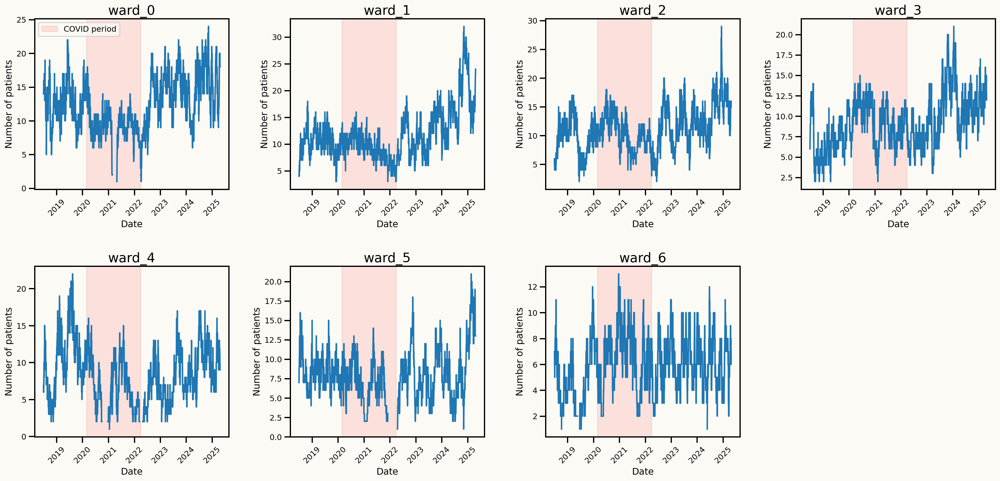


Hospital Bed Occupancy Forecasting: A Autoregressive Regression Hidden Markov Model
Mustafa Aslan, Cardiff University, UK
Lead supervisor: Prof. Bahman Rostami-Tabar
Co-supervisor: Dr. Jeremy Dixon
Data Lab for Social Good
Cardiff University, UK
16 Sep 2025
Outline
- The Problem
- Why is this important?
- Questions to address
- Data
- Modeling framework
- Experimental design
- Key findings
- Next Steps
The Problem
Current Systemic Issues in Patient Flow
- Unexpected surges lead to overcrowding, delayed admissions, and compromised patient care quality
- Inefficient bed management results in prolonged patient stays and increased healthcare costs
- High variability in patient flow complicates resource allocation
- Unexpected occupancy spikes lead to staff burnout and reduced morale
- Patients waiting 12+ hours for mental health beds due to poor coordination
Why is this important?
The Critical Impact of Hospital Bed Management
Patient Care: Overcrowding and delays can compromise patient care quality and safety.
Resource Optimization: Efficient bed management can reduce costs and improve hospital operations.
Staff Well-being: Reducing unexpected workload can help prevent staff burnout and improve morale.
System Efficiency: Better coordination can reduce wait times and improve overall healthcare delivery.
Questions to address
Key Research Questions
How can we accurately forecast hospital bed occupancy to improve resource allocation and patient care?
How can probabilistic forecasting models be developed to account for the inherent uncertainty in patient flow and bed availability?
What are the hidden factors influencing bed occupancy, and how can they be incorporated into forecasting models?
Data
Dataset
Daily hospital occupancy data from a UK hospital with 7 wards, spanning from July 2018 to April 2025. The dataset includes:
- Daily occupancy counts for each ward (daily number of patients staying in each ward)
- Date-related features: day of the week, month, year, day of the month, week of the year
- Holiday indicators
Data characteristics
Strong upward trend in occupancy over time
Spike after COVID-19 pandemic
Seasonal patterns
Day of the week seasonality
Seasonal patterns
Monthly seasonality
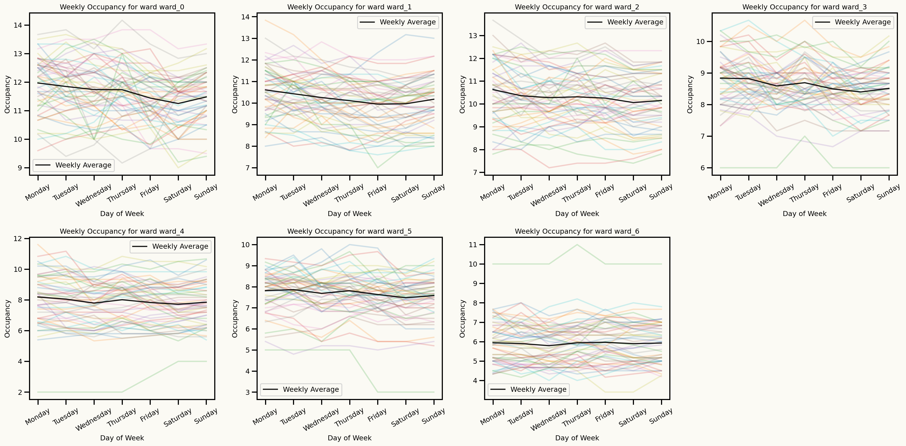
Effect of holidays
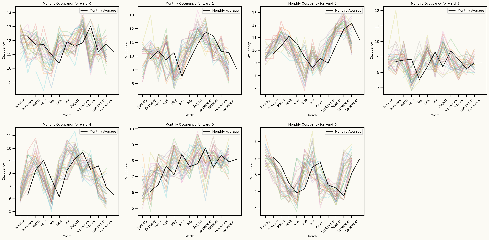
Modeling Framework
Autoregressive Regression Markov Switching Hidden Markov Model (AR-MSHMM)
Let \(y_t\) be the observed value at time \(t\), modeled as a function of its \(p\) lagged values, the regime-specific parameters associated with the hidden state \(s_t\), and exogenous variables \(\mathbf{X}_t = (X_{t1}, \ldots, X_{tM})\).
The AR-MSHMM can be expressed as follows:
\[ y_t^{(s)} = \beta_{0}^{(s)} + \sum_{i=1}^{p} \beta_{i}^{(s)} \, y_{t-i} + \sum_{j=1}^{M} \beta_{p+j}^{(s)} \, X_{tj} + \epsilon_t^{(s)}, \]
where:
- \(\beta_{i}^{(s)}\) are the coefficients for the lagged values for regime \(s\),
- \(\beta_{p+j}^{(s)}\) are the coefficients for the exogenous variables for regime \(s\),
- \(M\) is the number of exogenous variables,
- \(\epsilon_t^{(s)}\) is the error term for regime \(s\).
The Markov property: \[ P(s_t = k \mid s_{1:t-1}) = P(s_t = k \mid s_{t-1}), \quad \forall t \geq 2. \]
A HMM has the following components:
- \(S\): The set of regimes, \(\mathbb{S} = \{S_1, S_2, \ldots, S_K\}\).
- \(P\): The transition probability matrix
- \(p_{ij} = P(s_t = S_j \mid s_{t-1} = S_i)\) is the probability of transitioning from regime \(S_i\) to regime \(S_j\), s.t. \(\sum_{j=1}^{K} p_{ij} = 1\).
Transition matrix \(P\) is defined as:
\[ P = \begin{pmatrix} p_{11} & \cdots & p_{1K} \\ \vdots & \ddots & \vdots \\ p_{K1} & \cdots & p_{KK} \end{pmatrix} \]
Modeling Framework
Parameter Estimation of AR-MSHMM
The model parameters \(\Theta = \{\beta^{(s)}, \sigma^{2(s)}, P, \pi\}\) are estimated using the Expectation-Maximization (EM) algorithm.
The Expectation-Maximization (EM) algorithm is utilized to
estimatethe parameters,\(\Theta = \{\beta^{(s)}, \sigma^{2(s)}, P, \pi\}\).The Baum-Welch algorithm is used to
updatethe parameters to maximize the likelihood of the observed data.
EM Algorithm Framework
The EM algorithm consists of two main steps that are iterated until convergence:
- E-step (Expectation): Calculate the expected value of the complete-data likelihood given the current parameter estimates
- M-step (Maximization): Update parameter estimates by maximizing the expected log-likelihood computed in the E-step
Modeling Framework
E-step: State Probability Computation
The probability of being in regime \(S_i\) at time \(t\), given the observed data and current parameter estimates, is computed as:
\[ \gamma_t(i) = P(s_t = S_i \mid y_{1:T}, \Theta^{(k)}) = \frac{\alpha_t(i) b_t(i)}{\sum_{j=1}^{K} \alpha_t(j) b_t(j)} \]
where:
- \(\Theta^{(k)}\) represents the parameter estimates at iteration \(k\)
- \(\alpha_t(i)\) and \(b_t(i)\) are the forward and backward variables, respectively
Additionally, we compute the probability of transitioning from state \(S_i\) at time \(t\) to state \(S_j\) at time \(t+1\):
\[ \xi_t(i,j) = P(s_t = S_i, s_{t+1} = S_j \mid y_{1:T}, \Theta^{(k)}) = \frac{\alpha_t(i) p_{ij} b_j(y_{t+1}) \beta_{t+1}(j)}{\sum_{i=1}^{K} \sum_{j=1}^{K} \alpha_t(i) p_{ij} b_j(y_{t+1}) \beta_{t+1}(j)} \qquad(1)\]
Modeling Framework
Forward and Backward Variables
Forward Variable \(\alpha_t(i)\): The joint probability of observing the sequence \(y_{1:t}\) and being in state \(S_i\) at time \(t\):
Recursive computation for Forward variable: \[ \alpha_t(i) = P(y_{1:t}, s_t = S_i \mid \Theta) = \left[\sum_{j=1}^{K} \alpha_{t-1}(j) p_{ji}\right] o_i(y_t) \qquad(2)\]
with initialization: \(\alpha_1(i) = \pi_i o_i(y_1)\)
Backward Variable \(b_t(i)\): The conditional probability of observing the future sequence \(y_{t+1:T}\) given that the system is in state \(S_i\) at time \(t\):
Recursive computation for Backward variable: \[ b_t(i) = P(y_{t+1:T} \mid s_t = S_i, \Theta) = \sum_{j=1}^{K} p_{ij} o_j(y_{t+1}) b_{t+1}(j) \qquad(3)\]
with initialization: \(b_T(i) = 1\) for all \(i\)
Emission Probabilities (Observation Likelihoods)
The emission probability, \(o_i(y_t)\): the likelihood of observing \(y_t\) given state \(S_i\).
For the AR-MSHMM, this is modeled as a Gaussian distribution:
\[ o_i(y_t) = \frac{1}{\sqrt{2\pi \sigma_i^2}} \exp\left(-\frac{(y_t - \mu_{i,t})^2}{2\sigma_i^2}\right) \qquad(4)\]
where the state-specific conditional mean \(\mu_{i,t}\) is given by the autoregressive specification:
\[ \mu_{i,t} = \beta_0^{(i)} + \sum_{k=1}^{p} \beta_k^{(i)} y_{t-k} + \sum_{j=1}^{M} \beta_{p+j}^{(i)} X_{t,j} \]
Modeling Framework
M-step: Parameter Updates
Transition Probabilities
\[ p_{ij}^{(k+1)} = \frac{\sum_{t=1}^{T-1} \xi_t(i,j)}{\sum_{t=1}^{T-1} \gamma_t(i)} \]
Initial State Probabilities
\[ \pi_i^{(k+1)} = \gamma_1(i) \]
Regression Coefficients
For each state \(i\), the coefficients are updated using weighted least squares: \[ \theta^{(i,k+1)} = \left(\mathbf{X}^T \mathbf{W}_i \mathbf{X}\right)^{-1} \mathbf{X}^T \mathbf{W}_i \mathbf{y} \]
where \(\mathbf{X}\) is the design matrix containing lagged values and exogenous variables
\(\mathbf{X}\) is defined as: \[ \mathbf{X} = \begin{pmatrix} 1 & y_0 & y_{-1} & \cdots & y_{-p+1} & X_{1,1} & \cdots & X_{1,M} \\ 1 & y_1 & y_0 & \cdots & y_{-p+2} & X_{2,1} & \cdots & X_{2,M} \\ \vdots & \vdots & \vdots & \ddots & \vdots & \vdots & \ddots & \vdots \\ 1 & y_{T-1} & y_{T-2} & \cdots & y_{T-p} & X_{T,1} & \cdots & X_{T,M} \end{pmatrix} \]
and \(\mathbf{W}_i\) is a diagonal matrix with weights \(\gamma_t(i)\) for \(t = 1, \ldots, T\) \[ \mathbf{W}_i = \text{diag}(\gamma_1(i), \gamma_2(i), \ldots, \gamma_T(i)) \]
Variance Parameters
\[ \sigma_i^{2(k+1)} = \frac{\sum_{t=1}^{T} \gamma_t(i) (y_t - \mu_{i,t})^2}{\sum_{t=1}^{T} \gamma_t(i)} \]
Convergence Criterion
The EM algorithm continues until the change in log-likelihood between successive iterations falls below a predetermined threshold: \[ |\ell(\Theta^{(k+1)}) - \ell(\Theta^{(k)})| < \epsilon \] where \(\epsilon\) is typically set to \(10^{-3}\) or \(10^{-4}\).
Modeling Framework
Forecasting with AR-RHMM
To forecast \(h\) steps ahead, we employ a systematic three-stage approach that combines state prediction with regime-specific observation modeling.
- State Prediction: We predict the most probable state sequence for the next \(h\) time steps using the transition matrix \(\mathbf{P}\). The probability of being in state \(S_j\) at time \(T+h\) is computed recursively as:
\[ P(s_{T+h} = S_j) = \sum_{i=1}^{K} P(s_{T+h-1} = S_i) \, p_{ij} \]
The initial state distribution \(P(s_{T+1} = S_j)\) for the first step is estimated from the last estimated state probabilities obtained from the forward algorithm at time \(T\).
- Regime-specific forecasts: For each predicted regime, we utilize the corresponding regression model to forecast the observation at that time step, incorporating both lagged values and exogenous variables. The predicted observation \(\hat{y}_{T+h}\) for state \(s_{T+h}\) is computed as:
\[ \hat{y}_{T+h}^{s_{T+h}} = \beta_{0}^{(s_{T+h})} + \sum_{i=1}^{p} \beta_{i}^{(s_{T+h})} \, y_{T+h-i} + \sum_{j=1}^{M} \beta_{p+j}^{(s_{T+h})} \, X_{T+h,j} \]
For multi-step forecasting, we use the predicted observations as inputs for subsequent predictions. \(y_{T+h-i}\) are the actual observed values for \(i \leq h\) and the previously predicted values for \(i > h\).
- Final Forecast Computation: The final forecast for each time step is a weighted average of the forecasts from each regime, weighted by the predicted regime probabilities:
\[ \hat{y}_{T+h} = \sum_{j=1}^{K} P(s_{T+h} = S_j) \, \hat{y}_{T+h}^{(S_j)} \]
Benchmark models
Statistical models:
Exponential Smoothing (ETS): A state space time series model capturing level, trend, and seasonality.Linear Regression: A statistical model that estimates the linear relationship between predictors and a response variable.Lasso Regression: A regression method with L1 regularization, useful for variable selection and preventing overfitting.
Machine Learning models:
XGBoost: An optimized gradient boosting library designed to be highly efficient and flexible. It uses level-wise tree growth, building trees level by level horizontally.LightGBM: A gradient boosting framework that uses tree-based learning algorithms, known for its speed and efficiency. It uses leaf-wise tree growth.Random Forest: An ensemble learning method that builds multiple decision trees and merges them together to get a more accurate and stable prediction.
Probabilistic Forecasting using Conformal Prediction
Conformal Prediction for Time Series
- Conformal prediction is a distribution-free, finite-sample valid method for constructing prediction intervals
- It provides a way to quantify the uncertainty of point forecasts by generating prediction intervals that are guaranteed to contain the true future values with a specified probability.
Steps to Generate Prediction Intervals
- Point Forecasting:
- Generate point forecasts \(\hat{y}_{t+h}\) for the desired forecast horizon \(h\) using rolling-origin cross-validation on a
calibration setof 500 observations per horizon, derived from the last 500 days of training data.
- Residual Calculation: Compute the residuals from the calibration data set: \[ r_{t+h} = y_{t+h} - \hat{y}_{t+h} \]
where \(y_{t+h}\) are the actual observed values and \(\hat{y}_{t+h}\) are the point forecasts for \(t+h\).
- Nonconformity Scores: Calculate the nonconformity scores associated with the residuals of each forecast horizon. Nonconformity scores are calculated as the absolute values of the residuals: \[ A_{t+h} = |r_{t+h}| \]
- Quantile Calculation: For a desired confidence level \(1 - \alpha\), compute the \((1 - \alpha)\)-quantile of the nonconformity scores:
\[ q_{1-\alpha}^{(h)} = \text{Quantile}_{1-\alpha}(\{A_{t-n+h}\}_{t=t-n}^{n}) \]
where \(n\) is the size of the calibration set.
- Prediction Intervals: Construct the prediction intervals for the forecast horizon \(h\) as: \[ \left[\hat{y}_{t+h} - q_{1-\alpha}^{(h)}, \hat{y}_{t+h} + q_{1-\alpha}^{(h)}\right] \]
- Distribution Approximation: For each forecast horizon, generate a distribution of possible future values by adding residuals calculated from calibration set to the point forecasts.
\[ y_{t+h}^{(i)} = \hat{y}_{t+h} + r_, \quad r_i \in \{r_1, r_2, \ldots, r_n\} \]
where \(n\) is the number of residuals in the calibration set and \(i = 1, 2, \ldots, n\).
Forecasting metrics
Point Forecasting Metrics
Scaled Root Mean Squared Error (SRMSE) \[ SRMSE = \frac{\sqrt{\frac{1}{h} \sum_{t =n+1}^{n+h} (y_t - \hat{y}_t)^2}}{\frac{1}{n-1} \sum_{t=2}^{n} y_t} \]
Root Mean Squared Error (RMSE) \[ RMSE = \sqrt{\frac{1}{n} \sum_{t=1}^{n} (y_t - \hat{y}_t)^2} \]
Mean Absolute Error (MAE) \[ MAE = \frac{1}{n} \sum_{t=1}^{n} |y_t - \hat{y}_t| \]
Probabilistic Forecasting Metrics
- Qunatile Loss (QL) \[ QL_{\alpha} = 2 \sum_{t=1}^{h} \left[\alpha (y_t - \hat{y}_t^{(\alpha)}) \mathbb{1}_{\{y_t > \hat{y}_t^{(\alpha)}\}} + (1 - \alpha) (\hat{y}_t^{(\alpha)} - y_t) \mathbb{1}_{\{y_t \leq \hat{y}_t^{(\alpha)}\}}\right] \]
Experimental design
Preliminary data analysis and data preparation
- Missing values imputed using linear interpolation for wards with 0 occupancy level to run models
- Data visualization: Plotted time series to identify trends, seasonality, and anomalies.
- Stationarity tests: Augmented Dickey-Fuller (ADF) and Kwiatkowski-Phillips-Schmidt-Shin (KPSS) tests to assess stationarity of the time series data.
- Seasonal decomposition: Decomposed the time series into trend, seasonal, and residual components to understand underlying patterns.
- Correlation analysis, ACF and PACF plots: Analyzed autocorrelation and partial autocorrelation functions to determine appropriate lag orders for autoregressive models.
Feature engineering
- Time-based features: Extracted day and month from timestamps to capture temporal patterns.
- Public holidays: Created binary indicators for public holidays to account for their impact on hospital occupancy.
- Lagged features: Created lagged versions of key variables to incorporate past information into the models.
- Fourier terms: Added Fourier series terms for linear models to capture seasonality in the data.
- Rolling window features: Computed rolling means and standard deviations to see if improving the model’s performance.
Split the data into train and test data
- The last 360 days of data are reserved as the test set to evaluate model performance
- The remaining data is used for:
- training and validation
- hyperparameter tuning through rolling-origin cross-validation with a fixed window size of 30 days and step size of 13 days to capture yearly seasonality.
- Generate probabilistic forecasts using conformal prediction using optimized models on the training data.
The train-test split ensures that the models are evaluated on unseen data, providing a realistic assessment of their forecasting capabilities.
Model evaluation
- Cross-validation: Employed rolling-origin cross-validation on test set to assess model performance over multiple forecast origins and horizons. (30-day window, 13-day step size)
- Point forecasting metrics: Mean Absolute Error (MAE) and Scaled Root Mean Squared Error (SRMSE) to evaluate the accuracy of point forecasts.
- Probabilistic forecasting metrics: Quantile Loss (QL) to assess the quality of probabilistic forecasts.
- Model comparison: Compared the performance of the AR-RHMM with benchmark statistical and machine learning models to determine its effectiveness in forecasting hospital bed occupancy.
Key insights from data analysis
An important assumption to model: Stationarity
One approach to make the series stationary is to take the first difference of the series.
Original series: \(y_t, y_{t-1}, y_{t-2}, y_{t-3}, \ldots\)
Differenced series: \(y_t - y_{t-1}, y_{t-1} - y_{t-2}, y_{t-2} - y_{t-3}, \ldots\)
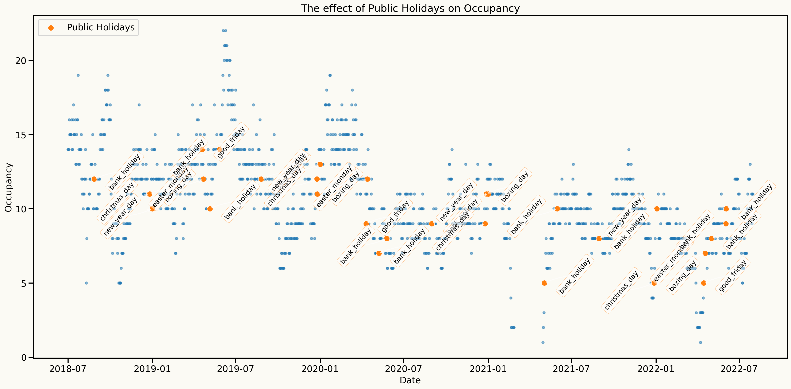
Key insights from data analysis
Information from ACF and PACF plots after differencing
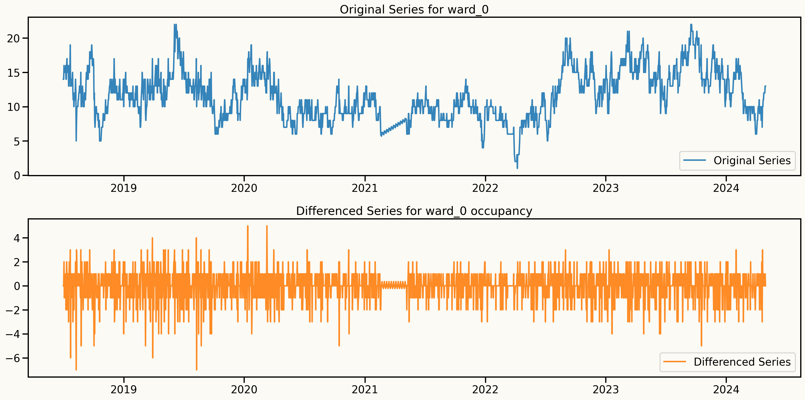
Key insights from data analysis
Alternative approach to make the series stationary and keep the dependence structure
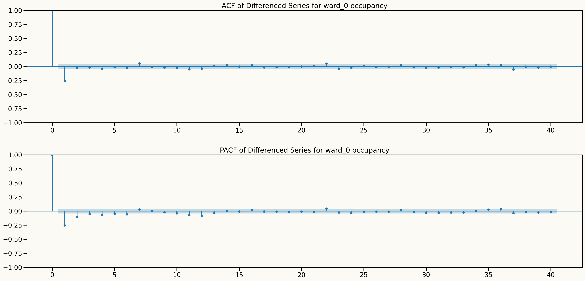
An important assumption to model: Stationarity
Information from ACF and PACF plots after detrending
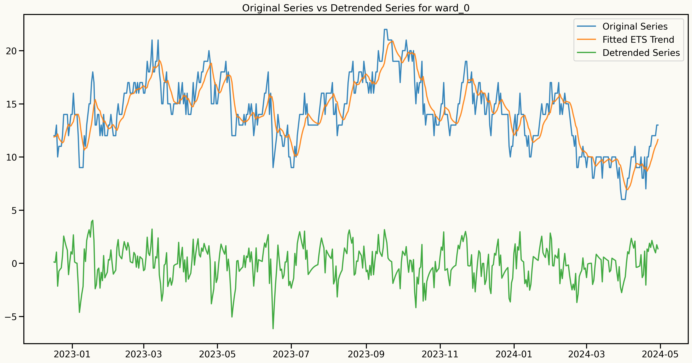
Validation setup
Rolling-origin cross-validation is used to evaluate model performance over time
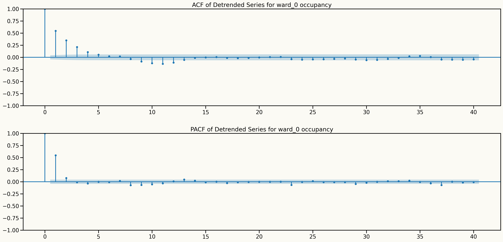
Results
Point Forecast results
| ward_0 | SRMSE | RMSE | MAE |
|---|---|---|---|
| HMM | 0.271 | 3.208 | 2.757 |
| linearRegression | 0.275 | 3.258 | 2.804 |
| Lasso | 0.276 | 3.268 | 2.832 |
| RandomForest | 0.284 | 3.365 | 2.885 |
| LightGBM | 0.284 | 3.364 | 2.905 |
| XGBoost | 0.290 | 3.433 | 2.996 |
| ets | 0.310 | 3.679 | 3.168 |
| ward_1 | SRMSE | RMSE | MAE |
|---|---|---|---|
| ets | 0.340 | 3.646 | 3.169 |
| Lasso | 0.346 | 3.701 | 3.220 |
| RandomForest | 0.347 | 3.707 | 3.229 |
| linearRegression | 0.347 | 3.711 | 3.233 |
| HMM | 0.347 | 3.712 | 3.231 |
| LightGBM | 0.348 | 3.720 | 3.241 |
| XGBoost | 0.353 | 3.770 | 3.277 |
| ward_2 | SRMSE | RMSE | MAE |
|---|---|---|---|
| HMM | 0.271 | 2.843 | 2.406 |
| linearRegression | 0.273 | 2.862 | 2.426 |
| Lasso | 0.284 | 2.975 | 2.538 |
| LightGBM | 0.285 | 2.983 | 2.544 |
| XGBoost | 0.290 | 3.036 | 2.605 |
| RandomForest | 0.300 | 3.141 | 2.723 |
| ets | 0.306 | 3.210 | 2.800 |
| ward_3 | SRMSE | RMSE | MAE |
|---|---|---|---|
| Lasso | 0.228 | 1.992 | 1.664 |
| LightGBM | 0.230 | 2.009 | 1.700 |
| linearRegression | 0.234 | 2.044 | 1.724 |
| RandomForest | 0.235 | 2.058 | 1.730 |
| HMM | 0.238 | 2.078 | 1.749 |
| XGBoost | 0.240 | 2.098 | 1.776 |
| ets | 0.283 | 2.475 | 2.133 |
| ward_4 | SRMSE | RMSE | MAE |
|---|---|---|---|
| Lasso | 0.293 | 2.320 | 1.999 |
| linearRegression | 0.312 | 2.470 | 2.135 |
| HMM | 0.320 | 2.532 | 2.211 |
| ets | 0.328 | 2.592 | 2.244 |
| XGBoost | 0.336 | 2.660 | 2.314 |
| RandomForest | 0.357 | 2.825 | 2.486 |
| LightGBM | 0.423 | 3.344 | 2.946 |
| ward_5 | SRMSE | RMSE | MAE |
|---|---|---|---|
| HMM | 0.331 | 2.500 | 2.122 |
| RandomForest | 0.331 | 2.503 | 2.129 |
| LightGBM | 0.332 | 2.511 | 2.143 |
| XGBoost | 0.332 | 2.512 | 2.144 |
| Lasso | 0.333 | 2.517 | 2.144 |
| linearRegression | 0.335 | 2.532 | 2.156 |
| ets | 0.344 | 2.603 | 2.235 |
Forecast Distributions (Quantile scores)
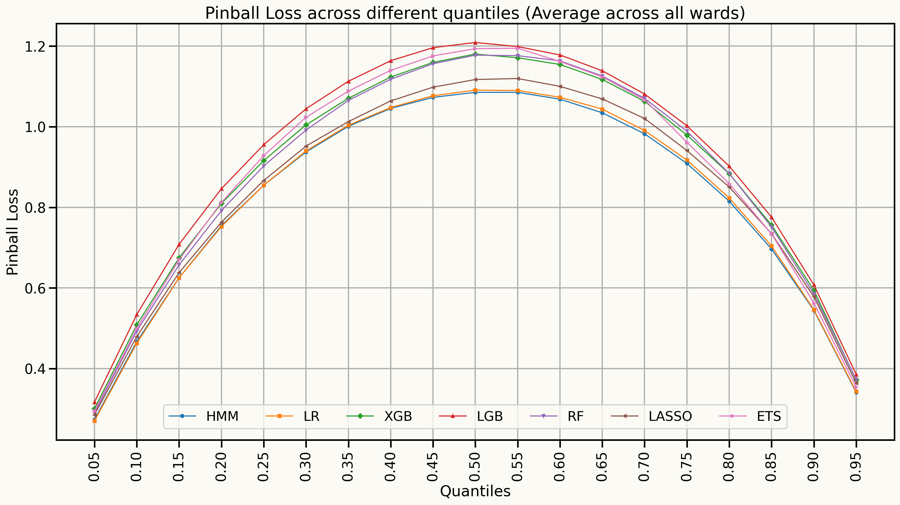
Forecast Distributions (Quantile scores)
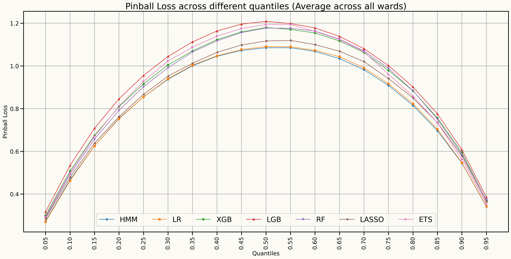
Forecast distributions (Quantile scores for 45% to 85%)
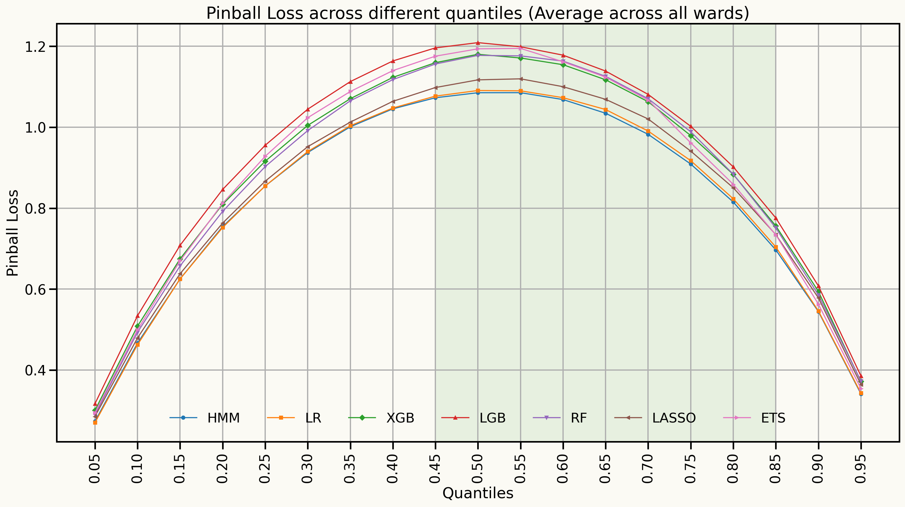
Forecast distributions by each horizon
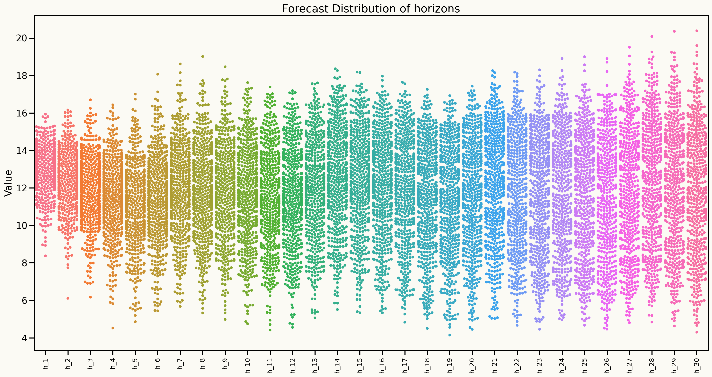
Model Explainability
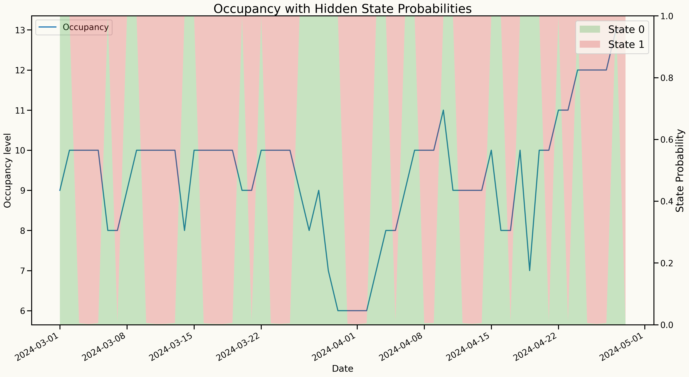
Transition probabilities
| State 0 | State 1 | |
|---|---|---|
| State 0 | 0.666 | 0.334 |
| State 1 | 0.487 | 0.513 |
Standard Deviations
| State 0 | State 1 | |
|---|---|---|
| standard deviations | 1.39 | 0.01 |
Key findings
Learning outcomes from the current experiments
Although AR-RHMM may not always outperform all benchmark models in point forecasting metrics, there is a significant improvement in probabilistic forecasting, particularly in quantile loss across 40% and 85% quantiles.
The model is more reliable for probabilistic forecasting since it accounts for regime changes and provides a distribution of possible future values, making it suitable for decision-making in hospital resource management.
The model performs consistently well interms of
probabilistic forecastingsince the model is probabilistic in nature and captures regime changes.
Why AR-RHMM?
- Captures regime changes in occupancy patterns (patterns of variability in hospital occupancy levels)
- Models complex dependencies and non-linear relationships without less risk of overfitting and less need for extensive hyperparameter tuning
- Produces interpretable results through regime-specific parameters
- Provides reliable forecasts incorporating uncertainty coming from regime changes
Next steps
Extend the AR-HMM to a multivariate framework (VAR-HMM) to jointly model multiple wards, capturing interdependencies and shared patterns in bed occupancy across different wards.
Develop an optimization framework that utilizes the probabilistic forecasts from the AR-HMM and VAR-HMM models to optimize bed allocation and resource management.
Test the models in real-world scenarios, collaborating with hospital staff to refine the models based on practical feedback and operational needs.